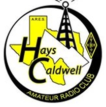

The Hays-Caldwell Amateur Radio Club is a two-county club for ham
operators. We meet every third Saturday of each month at the
Kyle Public Library at
10:00 AM. Our club supports a variety of interests, including emergency
communication (ARES, Red Cross, CERT, etc.), hams helping hams (Elmer's),
and occasional social events. We partner with the Austin and Central Texas
ARRL and ARES groups. Our dedicated club members are eager to assist new
members with information and a helping hand. A PDF brochure with more
information about the club can be found
here.
ARRL - American Radio Relay League

ARRL is the national association for Amateur Radio in the US. Founded in
1914 by Hiram Percy Maxim as The American Radio Relay League, ARRL is a
noncommercial organization of radio amateurs. ARRL numbers within its
ranks the vast majority of active radio amateurs in the nation and has a
proud history of achievement as the standard-bearer in amateur affairs.
ARRL’s underpinnings as Amateur Radio’s witness, partner and forum are
defined by five pillars: Public Service, Advocacy, Education, Technology,
and Membership.
For more information, click
here.
ARES - Amateur Radio Emergency Service

The Amateur Radio Emergency Service® (ARES) consists of licensed amateurs
who have voluntarily registered their qualifications and equipment, with
their local ARES leadership, for communications duty in the public service
when disaster strikes.
For more information, click
here.
Central Texas Ham Council
The Central Texas Ham Council consists of leaders of formal amateur radio
organizations (clubs and groups) within a 100 mile radius of Austin,
Texas. This group meets regularly to discuss and coordinate activities
that affect the entire region. The council will assist with inter-county
events such as multi-county bicycle race coordination and to share news
that is of interest beyond the boundaries of a local club or organization.